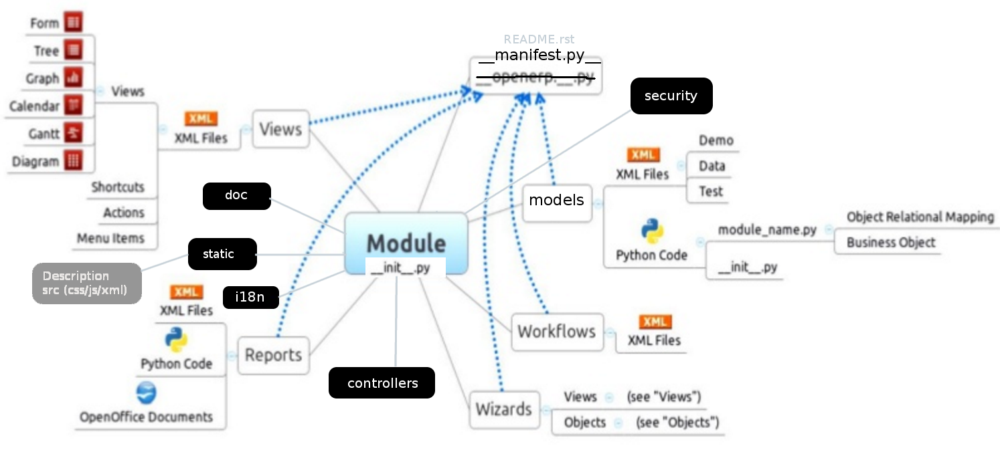
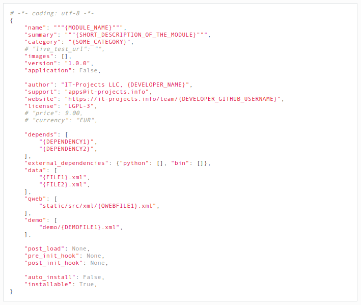
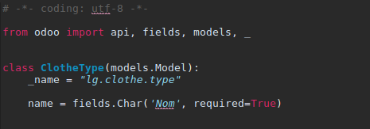
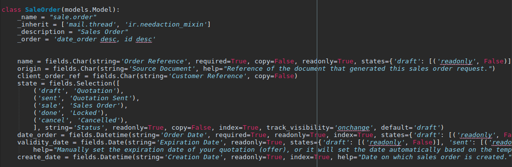
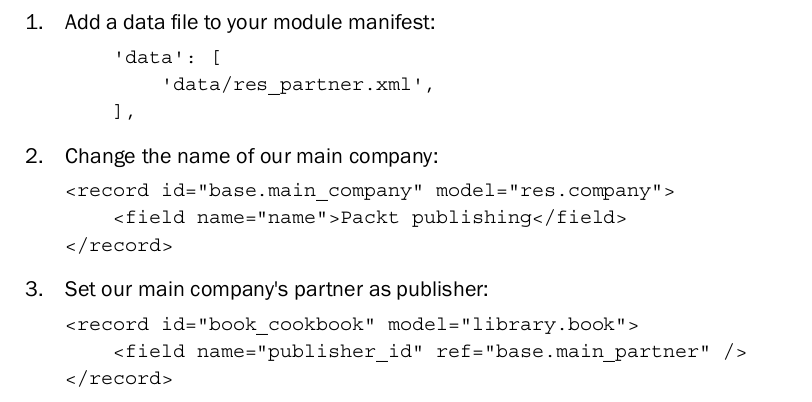
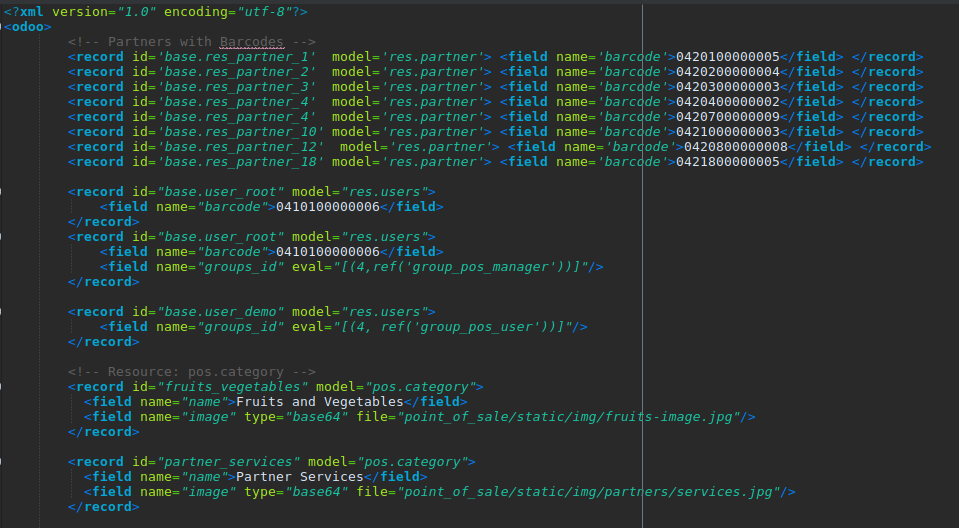

Formation Odoo Dev
IUT La Roche sur Yon
Le 04/03/2019
Les modules Odoo en détail
- Structuration des sources (dossiers et fichiers)
- Introduction aux objets : l'ORM
- Héritage des modèles
- Relations entre les objets
- Les méthodes de l'ORM
- Les méthodes
- Comment créer des données depuis des fichiers XML
- La gestion des droits
Structuration des sources
Construire un module Odoo
- Contenu d'un module
- Structuration module
- Création dépôt
- Création Module
Objectif : Module installé
Contenu d'un module
fichier __manifest__.py
Liste des catégories utilisées
|
|
Fichier __init__.py
Norme standard de python
# -*- coding: utf-8 -*- # Part of Odoo. See LICENSE file for full copyright and licensing details. from . import controllers from . import models from . import report from . import wizard
Pratique
Déclaration de notre module
Les objets, les héritages et les relations
L'ORM
ORM = object-relational mapping
Mapping objet-relationnel
Des classes pour les tables et les champs, méthodes CRUD.
Les propriétés d'un modèle

Les champs (odoo.fields)
Char Text Selection Html Integer Date Datetime Boolean Binary Many2one Many2many One2manyLes champs automatiques d'un modèle
Toujours présent
- id (clé primaire)
Désactivable avec _log_access=False en attribut du modèle
- create_uid
- create_date
- write_uid
- write_date
Champs spécifiques
- name → habituellement un Char -cf _rec_name
- active → Boolean
- sequence → Integer -cf _order
- state → Selection
- parent_id, parent_left, parent_right
→ Integer, pour les hiérarchies
Attributs communs aux champs (1/2)
- string → Libellé du champ, argument facultatif si premier
- defaults → Valeur directe ou lambda expression
- translate → Pour les champs textes : Char, Text, Html
- readonly=True → Lecture seule (en interface)
- required=True → Champ obligatoire (toujours)
- index=True → Crée un index en base de données
- copy=False → Ignoré en copie d'une instance
Attributs communs aux champs (2/2)
- groups → Limite l'accès au champs
(groups='base.group_user') - states → Restrictions variables selon valeur de state
states={'done':[('readonly',True)]}
Pour : readonly, required, et invisible - track_visibility → A utiliser en conjonction avec mail.thread
Permet d'historiser automatiquement un changement d'état, par exemple - company_dependent → property, valeur différente selon la compagnie associée
Attributs spécifiques
- Char → size=x (longueur maximale)
- Selection
```python state = fields.Selection( [('draft','New'), ('open','Started'),('done','Closed')], 'State') ``` - Float → precision=(x,y)
Champs relationnels : Many2one
- Le co-modèle
Attributs
- ondelete → set null , restrict , cascade
- context → context local
- domain → domaine local, pour filtrer les données
Champs relationnels : Many2many
Champs relationnels : One2many
Simple déclaration, aucune consommation d'espace
Ce sont les équivalences inverses du Many2one.
Champs calculés et dépendance
```python
total = fields.Float(compute='_compute_total')
@api.depends('value', 'tax')
def _compute_total(self):
for record in self:
record.total = record.value + record.value * record.tax
```
* Nouvel attribut des champs calculés : `store=True`
Champs "related"
Un champ related est la clé donnant l'accès depuis le modèle courant, à un champ relatif à un sous-modèle.
Exemple :
nickname = fields.Char(related='user_id.partner_id.name', store=True)
* Nouvel attribut des champs calculés : `store=True`
Les contraintes
Héritage d'un modèle

Mise à jour de l'interface
Lors de la saisie dans une forme, il est intéressant de pouvoir mettre à jour des champs avant enregistrement.
La fonction onchange a cet usage.
Ne pas l'utiliser sur un champ calculé.
```python
@api.onchange('field1', 'field2') # if these fields are changed, call method
def check_change(self):
if self.field1 < self.field2:
self.field3 = True
```
Extrait : le modèle sale_order
Pratique
Déclaration de notre modèle
Contrôle par l'interface Odoo
Les méthodes et outils de l'ORM
Méthodes et outils
- Recordsets
- L'environnement
- Les domaines
- La notation des champs relationnels
- Les méthodes CRUD
- Création Module
L'interface shell
./odoo-bin.py shell -d demo10 -c addons_teamdsi/odoo_xps.conf
In [3]: p=self.env['res.partner']
In [4]: l=p.search([('id','=',8)])
In [5]: l.name
Out[5]: u'Agrolait'
In [6]: l.name="Agrolaitier"
In [7]: self.env.cr.commit()
Recordsets : présentation
C'est le recordset qui permet d'accéder à des records d'un même modèle (trié). Toute méthode d'un modèle prend en paramètre à minima self qui est un recordset
class AModel(models.Model):
_name = 'a.model'
def a_method(self):
# self can be anywhere between 0 records and all records in the
# database
self.do_operation()
Il est possible d'itérer sur un recordset
def do_operation(self):
print self # => a.model(1, 2, 3, 4, 5)
for record in self:
print record # => a.model(1), then a.model(2), then a.model(3), ...
Recordsets (accès aux champs)
L'interface des "enregistrement(s) actif(s)" que fournit le Recordset permet d'accéder aux champs du modèle, via les attributs (ou comme un dictionnaire).
Cet accès est possible en lecture, mais aussi en écriture, mais seulement pour un singleton (sinon déclenche une erreur)
Fixer la valeur de l'attribut représentant un champ déclenche un enregistrement dans la base de données.
>>> record.name
Example Name
>>> record.company_id.name
Company Name
>>> record.name = "Bob"
>>> field = "name"
>>> record[field]
Bob
Opérations disponibles sur un recordset
Un recordset n'est pas mutable, mais peut être combiné avec des opérations, retournant un nouveau recordset, sans préserver l'ordre.
- record in set → singleton, retourne vrai si présent
- set1 | set2 → union des deux, renvoie tous les records présents dans les deux
- set1 & set2 → intersection des deux recordsets
- set1 - set2 → recordset des records de set1 qui ne sont pas dans set2
Transformation d'un recordset
odoo.models.Model.filtered
# only keep records whose company is the current user's
records.filtered(lambda r: r.company_id == user.company_id)
# only keep records whose partner is a company
records.filtered("partner_id.is_company")
odoo.models.Model.sorted
# sort records by name
records.sorted(key=lambda r: r.name)
odoo.models.Model.mapped
# returns a list of summing two fields for each record in the set
records.mapped(lambda r: r.field1 + r.field2)
La fonction peut représenter un champ, pour obtenir sa/ses valeur(s):
# returns a list of names
records.mapped('name')
Compléments recordset
INDISPENSABLE !
>>> env.ref('base.group_public')
res.groups(2)
propriété ids pour obtenir la liste des ids du recordset
Check existence des records dans un recordset
if not record.exists():
raise Exception("The record has been deleted")
records.may_remove_some()
# only keep records which were not deleted
records = records.exists()
odoo.models.Model.ensure_one
records.ensure_one()
# is equivalent to but clearer than:
assert len(records) == 1, "Expected singleton"
L'environnement
La classe odoo.api.Environment stocke des informations contextuelles de l'ORM :
le curseur de BDD (pour les requêtes), l'utilisateur courant (pour les droits)
et le contexte.
>>> records.env
Environment object ...
>>> records.env.user
res.user(3)
>>> records.env.cr
Cursor object ...
En créant un recordset depuis un autre, l'environnement est hérité:
>>> self.env['res.partner']
res.partner
# ce recordset partage le même environnement
Altérer l'environnement
Des méthodes permettent de modifier l'environnement d'un recordset (en fait, recrée un nouveau)
odoo.models.Model.sudo
# créer un partenaire comme administrateur
env['res.partner'].sudo().create({'name': "A Partner"})
odoo.models.Model.with_context
# look for partner, or create one with specified timezone if none is
# found
env['res.partner'].with_context(tz=a_tz).find_or_create(email_address)
Méthodes : create
odoo.models.Model.create
Prend en paramètre un dictionnaire de valeurs de champs, et renvoie le recorset de l'enregistrement créé
>>> env = self.env['res.partner']
>>> self.create({'name': "nouveau partenaire"})
res.partner(5684)
Définir les champs relationnels
Référence pour affecter la/les valeurs d'un champ one2many ou many2many :
(0, 0, { values }) link to a new record that needs to be created with the given values dictionary
(1, ID, { values }) update the linked record with id = ID (write *values* on it)
(2, ID) remove and delete the linked record with id = ID (calls unlink on ID, that will delete the object completely, and the link to it as well)
(3, ID) cut the link to the linked record with id = ID (delete the relationship between the two objects but does not delete the target object itself)
(4, ID) link to existing record with id = ID (adds a relationship)
(5) unlink all (like using (3,ID) for all linked records)
(6, 0, [IDs]) replace the list of linked IDs (like using (5) then (4,ID) for each ID in the list of IDs)
Example:
[(0, 0, {'field_name':field_value_record1, ...}), (0, 0, {'field_name':field_value_record2, ...})]
Pour un many2one :
. l'ID de référence
. False pour supprimer le lien.
Méthodes : browse, search
odoo.models.Model.browse
Prend un id ou une liste d'ids et retourne un recordset (système externe ou old API)
>>> self.browse([7, 18, 12])
res.partner(7, 18, 12)
odoo.models.Model.search
Prend un domaine comme référence, et renvoie un recordset des enregistrements qui matchent.
>>> # searches the current model
>>> self.search([('is_company', '=', True), ('customer', '=', True)])
res.partner(7, 18, 12, 14, 17, 19, 8, 31, 26, 16, 13, 20, 30, 22, 29, 15, 23, 28, 74)
>>> self.search([('is_company', '=', True)], limit=1).name
'Agrolait'
Méthodes : search
Paramètres de search
- offset → Position de début du résultat
- limit → Nombre maximum de résultats
- order → Permet de surcharger ponctuellement l'attribut order du modèle sous-jacent
Il existe une autre méthode : odoo.models.Model.search_count qui permet de matcher le nombre d'enregistrements conformes à un domaine.
Les domaines
Un domaine est une liste de critères. Chacun est représenté par un triplet (liste ou tuple), composé ainsi :
field_name (str)
un nom de champ du modèle, ou un champ d'une relation, relié par un ou des points (doted notation)
comme 'partner_id.country'
operator (str)
Un operateur qui sera utilisé pour comparer le field_name et la value.
value
variable type, must be comparable (through operator) to the named
field
Les opérateurs de domaines
Les opérateurs valides sont :
=
!= not equals to
> greater than
>= greater than or equal to
'<' less than
<= less than or equal to
=? unset or equals to (returns true if value is either None or
False, otherwise behaves like =)
=like
matches field_name against the value pattern. An underscore
_ in the pattern stands for (matches) any single character; a
percent sign matches any string of zero or more characters.
like
Similar to =like but wraps value with pcent before matching
not like
ilike
case insensitive like
not ilike
=ilike
case insensitive =like
in
is equal to any of the items from value, value should be a
list of items
not in
is unequal to all of the items from value
child_of
is a child (descendant) of a value record.
Compléments sur les domaines
& logical *AND*, '|' logical *OR*, '!' logical *NOT*
[('name','ilike','ABC'),
('language.code','!=','en_US'),
'|',('country_id.code','=','be'),
('country_id.code','=','de')]
? ? ? ?
Réponse
(name like '%ABC%')
AND (language is NOT english)
AND (country is Belgium OR Germany)
Exercice
- Rechercher les devices dont la date d'achat est supérieure au 01/01/2019
- Rechercher les devices disponibles (pas de date allocation)
- Rechercher les devices étant du modèle "Galaxy S10"
- Rechercher les devices de la marque Samsung ou OnePlus
- Rechercher les devices dont la durée de garantie est inférieure à 6 mois ou qui n'ont pas date de fin de garantie
Méthode : write
Met à jour le recordset courant
Paramètres :
vals (dict)
--
champs à mettre à jour, ainsi que leur valeur:
{'foo': 1, 'bar': "Qux"}
- pour les champs numériques (Integer, Float) la valeur doit correspondre au type de champ.
- Pour les Boolean, la valeur doit être un
bool - Pour une Selection, la valeur doit être une chaine existante ou un entier
- Pour les champs relationnels, déjà vu pour le create
- Pour les Date et Datetime c'est une chaine sous la forme '2017-02-21 18:45:00'
Compléments sur write
Essayer d'écrire plusieurs enregistrements déclenchera une erreur.
Attention à la notation d'attribut pour mettre à jour ! ! !
# 3 * len(records) database updates
for record in records:
record.a = 1
record.b = 2
record.c = 3
# len(records) database updates
# CORRECT !
for record in records:
record.write({'a': 1, 'b': 2, 'c': 3})
# 1 database update
records.write({'a': 1, 'b': 2, 'c': 3})
Méthode : unlink
Efface le ou les enregistrements du recorset courant
Erreurs
AccessError --
L'utilisateur n'a pas les droits d'effacement
UserError --
Il y a des enregistrements liés protégés
Pratique
Tests sur notre dossier
Création, recherches, ...
ERP Peek
sudo pip install -U erppeek
ERP Peek
erppeek --config=/home/famiaud/erppeek.ini --env=test
# config.ini
[test]
scheme = http
port = 8071
host = localhost
username = team@team-dsi.fr
password = admin
database = test
Exercice
- Créer une marque et un type de modèle
- Créer un modèle et un device
- Rechercher les clients français
- Rechercher les devices dont la marque est "Samsung"
- Ajouter un numéro de téléphone de support sur une marque
- Faire un search des devices qui n'ont pas de date d'achat, et mettre une date d'achat à aujourd'hui
- Créer, puis supprimer un device
Exercice 2
Créer un script Python qui va lire un fichier CSV contenant les colonnes suivantes et créer les devices automatiquement- Numéro de série
- Date allocation
- Date achat
- Modèle
- Marque
- Type (téléphone, PC, ...)
- Employé
Créer des données à l'installation du module
Structure d'un fichier XML
- Concepts
- Instancier des données
- Les champs relationnels
Objectif : charger des données dans la base
Concepts
- Le principe de mise à jour (noupdate=1)
- L'instruction eval
- La référence ; recherche avec debug mode OU source
- Enregistrer une donnée relationnelle
insérer des données
insérer des données (2)
Pratique
Insérer des données
- Créer des marques via XML
- Créer des modèles via XML
- Créer des types de devices via XML (téléphone, PC, ...)